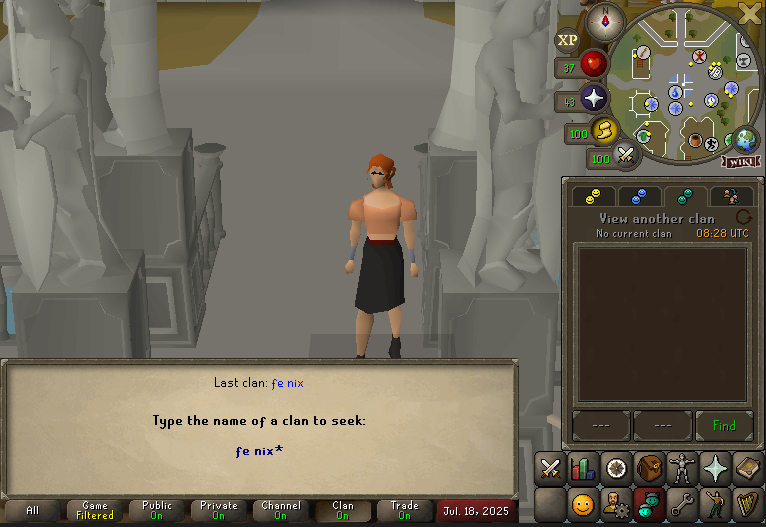

Fe Nix is open to anyone who'd like to chat, regardless of whether or not they wish to become a member.
To be a guest of the clan follow the guide image below.

Once you've joined, you can chat by starting your message with /// or /gc.
Keep in mind our rules apply to guests as well. Read them over here